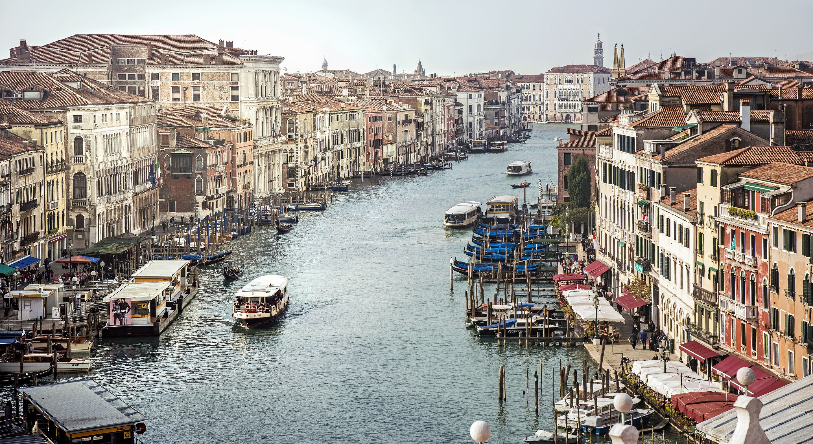

Venice (/ˈvɛnɪs/ VEN-iss; Italian: Venezia [veˈnɛttsja] (About this soundlisten); Venetian: Venesia or Venexia, pronounced [veˈnɛsja]) is a city in northeastern Italy and the capital of the Veneto region. It is situated on a group of 118 small islands[3] that are separated by canals and linked by over 400 bridges.[3][4] The islands are located in the shallow Venetian Lagoon, an enclosed bay that lies between the mouths of the Po and the Piave rivers (more exactly between the Brenta and the Sile).
In 2018, 260,897 people resided in the Comune di Venezia, of whom around 55,000 live in the historical city of Venice (centro storico). Together with Padua and Treviso, the city is included in the Padua-Treviso-Venice Metropolitan Area (PATREVE), which is considered a statistical metropolitan area, with a total population of 2.6 million.[5]